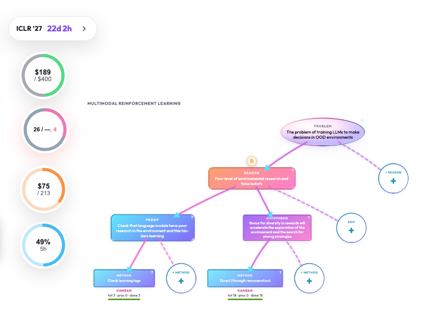

Виджеты
Проектные панели поверх локального ResearcherOS: пакет лежит в koi-structure/widgets/, ядро только обнаруживает манифест и монтирует mount() в #koi-widgets-root. Ядро приложения ради виджета не меняют.

Как работает
Виджет — папка в исследовании:
tree/<repo>/koi-structure/widgets/<widget-id>/
manifest.yaml
README.md
web/
widget.js # export async function mount(host, ctx)
widget.css
backend/ # опционально: fetch.py → dict
Манифест задаёт id (как имя папки), title, summary, visibility, surfaces (web / desktop), default_enabled, точку входа.
При загрузке главной страницы клиент запрашивает каталог GET /api/widgets, для каждого включённого с web_url динамически импортирует JS и вызывает mount(host, ctx). Контекст: api, id/key виджета, assetBase, манифест.
Включение/выключение хранится в .run/widgets.json (ключ project_id/widget_id), не в Git проекта — локальный выбор на машине.
Общие хелперы UI (например плавающее окно): /widgets/_base/floating.js из widgets/base/web/ в репозитории ResearcherOS. Ассеты пакета: /widgets/<project_id>/<id>/….
Опционально бэкенд: если есть backend/fetch.py с fetch() -> dict, UI зовёт GET /api/widgets/<project>/<id>/data (квоты, метрики кластера и т.п.).
Пример из манифеста: «Cursor usage» — кольцо остатка квоты Cursor; другие проекты кладут свои панели (ресурсы, кастомный мониторинг).
Как человек работает в интерфейсе
- Виджеты появляются сами на главном workspace, если пакет есть и включён (часто плавающий элемент поверх карты).
- Включение через CLI (или API), не через отдельную большую «витрину» в UI:
python -m widgets.base.cli list
python -m widgets.base.cli enable <project_id>/<widget-id>
python -m widgets.base.cli disable <project_id>/<widget-id>
- Чтобы добавить виджет в проект: положить папку по контракту выше в
koi-structure/widgets/, закоммитить в ветку исследования, перезагрузить страницу. - Hub задуман как место публикации переиспользуемых виджетов (как скиллы); живая правка пакета — локально в своём проекте.
Отдельного скилла «виджет» нет: это расширение UI, не сценарий агента. Агент может помочь написать widget.js, но монтирование — ответственность runtime.
Какие сценарии для агента подключаются
| Что | Роль |
|---|---|
| Нет обязательного skill | Виджет не в очереди Inbox |
| Ручная разработка | Агент в IDE правит файлы в widgets/<id>/ по контракту README |
| Hub (каталог) | Позже — browse/download чужих пакетов; сейчас акцент на project-local |
Как устроено технически
Engine vs project
| Где | Что |
|---|---|
ReseachOS/widgets/base/ |
манифест, registry, CLI, floating.js |
tree/…/koi-structure/widgets/ |
пакеты исследователя |
web/widgets-loader.js |
загрузка и mount |
#koi-widgets-root в index.html |
контейнер |
api/routers/widgets.py + api/web_proxy.py |
каталог, data, раздача статики |
Legacy: cursor-usage-widget.js — shim на тот же initWidgets.
Контракт mount
export async function mount(host, ctx) {
// ctx.api, ctx.widgetId, ctx.widgetKey, ctx.assetBase, ctx.manifest
return () => { /* unmount */ };
}
Ограничения
- Без валидного манифеста и
entry.webпакет не попадёт в каталог с URL. - Состояние enable локальное (
.run/widgets.json) — у коллеги виджет нужно включить отдельно (или сменитьdefault_enabledв манифесте). - Desktop surface в манифесте зарезервирован; текущий loader — web.
Связанные страницы
Текст: content/widgets.md. Медиа: media/widgets-hero.*. Контракт пакета: widgets/README.md.